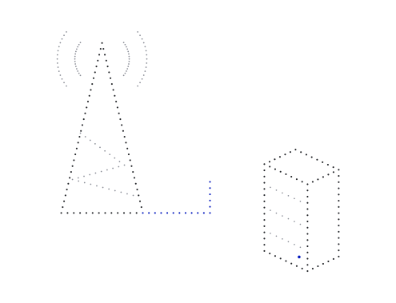
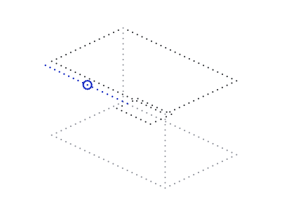
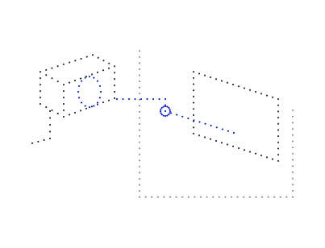
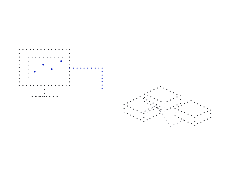
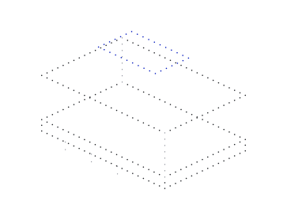

Communications 2026
GTPL Hathway
One integrated system for an edge deployment.
An integrated edge-computing, cybersecurity, virtualisation and networking stack for GTPL Hathway’s proof-of-concept deployment.
Read the case studyRun demanding workloads on verifiable Linux systems, with less exposure and control over your data.
Compute and Silicon OS, integrated around your operation.
More capability.
Control that stays with you.

Reduce the attack surface. Limit each workload’s access. Build essential operations on verifiable Linux systems.
Less exposure. Clear access boundaries. Integrity your team can check.
See how Neurulus deployments addressed computing, cybersecurity and essential infrastructure requirements.

GTPL Hathway
An integrated edge-computing, cybersecurity, virtualisation and networking stack for GTPL Hathway’s proof-of-concept deployment.
Read the case study
Genetec Security Web Client
Security-readiness work for a web client used in a security environment, delivered through Inflow Technologies.
Read the case study
University of Hyderabad
Servers, a GPU node, storage, workstations and supporting infrastructure supplied and commissioned as one research-computing scope.
Read the case study
Start with compute and Silicon OS supplied as an integrated system, selected for your workload and operating environment.